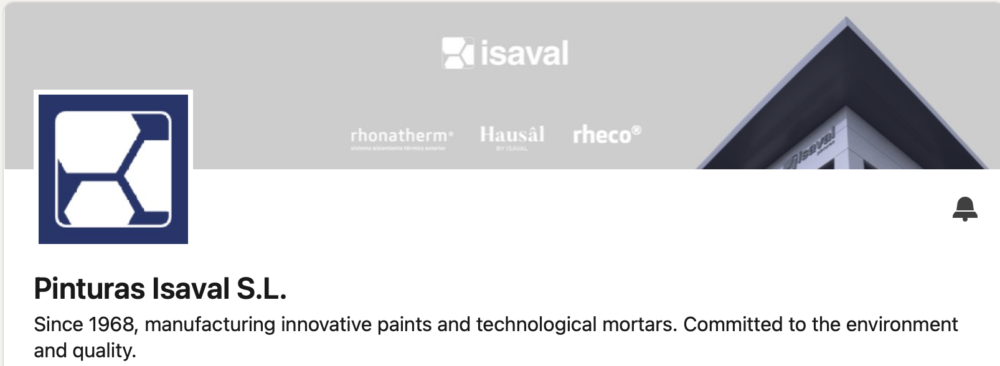

Internal AI Knowledge Hub
Repositorio Ejecutivo de Píldoras sobre Inteligencia Artificial
Uso interno – Grupo Pinturas Isaval
Santiago Vallejo
Presidente – Pinturas Isaval
Este repositorio reúne reflexiones breves, análisis y experimentos sobre inteligencia artificial aplicados a la dirección empresarial.
¿Cómo quieres explorar este repositorio?
Puedes estudiar las píldoras en español o en inglés.